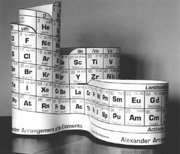

Istoric
Istoria tabelului periodic al elementelor in secolul XVIII
În secolul al XVIII-lea, marele chimist francez Antoine Lavoiser, în lucrarea sa
"'Traité Elémentaire de Chimie" (Tratat de chimie elementară), apărută în 1789, a
împărţit cele 33 de elemente cunoscute la vremea sa în patru grupe în funcţie de
proprietăţile lor chimice: gaze, nemetale, metale, şi pământuri .
Istoria tabelului periodic al elementelor in secolul XIX
În secolul al XIX-lea, în anul 1869 cercetătorul german Johann Döbereiner a notat
faptul că elementele asemănătoare au mase atomice apropiate. El a eleborat aşa-zisa
Lege a Triadelor care consta în împărţirea elementelor în grupe de câte trei elemente
similare în care proprietăţile elementului din mijloc puteau fi deduse din proprietăţile
elementului celui mai greu şi ale elementului celui mai uşor. Iată câteva exemple de triade
din acest tabel: litiu, sodiu şi potasiu, sulf, seleniu şi teluriu sau clor, brom şi iod.
Cercetătorul francez De Chancourtois a realizat un tabel cilindric al elementelor pentru a arăta
reapariţia periodică a proprietăţilor elementelor chimice.
În 1865, un alt cercetator care a încercat clasificarea elementelor a fost englezul John Newlands,
profesor la Şcoala de Medicină din Londra. El a aşezat elementele într-o tabelă alcătuită din 7
coloane în ordinea crescătoare a masei atomice. El a evidenţiat faptul că elementele cu proprietăţi
asemănătoare apar la intervale de 8 elemente şi a eleborat aşa-zisa Lege a octavelor.
Alte contribuţii la clasificarea elementelor chimice, au mai adus cercetătorul englez Wiliam Olding,
în 1864 şi cercetătorul german Julius Lothar Meyer în 1868.
W. Olding a realizat un tabel foarte asemănător cu cel realizat mai târziu de Mendeleev. Grupele sunt
aranjate pe orizontală iar elementele sunt aşezate în ordinea masei atomice. În tabel s-au lăsat spaţii
libere pentru elementele nedescoperite.
Chimistul german Julius Lothar Meyer a realizat un tabel al elementelor chimice în 1864, apoi o a doua
versiune în 1868, elementele fiind aşezate în ordinea masei atomice. Mayer şi-a publicat lucrarea mult
mai târziu decât Mendeleev, astfel încât nu a putut avea prioritate în acest domeniu. Se pare că cei
doi chimişti, Meyer şi Mendeleev au descoperit sistemul periodic al elementelor în acelaşi timp.
Cel care este unanim acceptat ca fiind descoperitorul sistemului periodic modern al elementelor a fost
chimistul rus Dimitri Ivanovici Mendeleev.
Versiunea finală a sistemului periodic din 1871 a lasat spatii libere sugerând că alte elemente chimice
vor fi descoperite mai tarziu. Elementul 101 a fost numit dupa Dimitri Ivanovici Mendeleev (1834-1907),
care a descoperit "Sistemul periodic al elementelor" aranjat sub forma de tabela si continuu perfectionat
intre 1868 si 1871. Prin gruparea celor 62 de elemente, cunoscute pe vremea sa, in ordinea crescândă a
greutăţii lor atomice, Mendeleev a demonstrat o revenire periodică a proprietăţilor şi a prezis proprietăţile
elementelor care ar fi trebuit sa existe, dar care nu fusesera descoperite. Deşi iniţial sistemul său nu s-a
bucurat de acceptarea generala, descoperirea elementelor care lipseau si care aveau proprietatile prezise de
el a fost hotaratoare pentru confirmarea valabilitatii teoriei sale si care in forma actuala constituie un
concept fundamental al chimiei moderne. Sistemul periodic numar a 118 elemente chimice, din care 90 se gasesc
in stare naturala (2 lichide, 11 gaze si 77 solide) iar altele 28 artificiale. Pana in 1984 s-au produs din acestea
6 845 000 de compusi, din care 65000 cu utilizari curente.
Dimitri Ivanovici Mendeleev s-a nascut in Tobolsk, Siberia la 8 februarie 1834. Dupa orbirea si apoi moartea
tatalui sau in 1847, mama sa a pus in functiune o fabrica de sticla. Dupa ce fabrica a fost distrusa de flacarile
unui incendiu, familia s-a mutat mai intai la Moscova iar apoi la St. Petersburg unde D.I. Mendeleev a urmat
cursurile "Institutului Pedagogic". A devenit profesor in 1855 si a fost trimis la sud de Odessa pentru a-si
continua studiul in chimie. Primul sau post universitar l-a obtinut in 1857 si a fost trimis la Universitatea
din Heidelberg (1859-1861) pentru a-si continua studiile. intors inapoi la St.Petersburg, a inceput sa scrie si
sa editeze lucrari stiintifice. A devenit profesor de chimie la "Institutul Tehnic". În 1864. cartea sa,
"Principiile chimiei" a fost publicată în 1868-1870. În timpul scrierii cărţii, D.I.Mendeleev a început sa
cerceteze relaţiile dintre elementele chi mice. În urma acestor cercetări a apărut "Sistemul Periodic al elementelor"
care prezenta lista tuturor elementelor aranjate după masa atomica şi aranjate în diferite grupe. Cand tabelul a fost
acceptat, a devenit foarte utilizat pentru înţelegerea procesului de disociere radioactivă prin care un element este transformat în altul.
Mendeleev a avut contribuţii substanţiale la dezvoltarea industriei şi agriculturii din Rusia. A murit la 2 februarie 1907.
Istoria tabelului periodic al elementelor in secolul XX
În secolul XX, sistemul periodic al elementelor a fost completat cu noi elemente descoperite;
în prezent sistemul periodic are 118 elemente. Sistemul periodic modern seamănă cu cel realizat
de Mendeleev, elementele fiind aranjate în funcţie de masa atomică, la care s-a adăugat grupa 0
(grupa gazelor rare).

Această grupă a fost adăugată de chimistul american Ramsay. Mai târziu, sistemul periodic a fost
rearanjat de către americanul Mosely ţinându-se cont de numărul atomic (sarcina nucleară), şi nu
de masa atomică. Îmbunătăţiri importante de ultimă oră ale sistemului periodic au fost aduse de
americanul Roy Alexander în 1994. El a realizat un tabel tridimensional al elementelor chimice.
Toate elementele sunt aranjate într-o secvenţă continuă în funcţie de numărul atomic. Elementele
din grupele 0, Ia, IIa, IIIb, IVb, Vb şi VIIIb se află în partea de sus a unui "tub”; deasupra
acestuia se află un "cerc" al hidrogenului. Din partea de jos a acesui tub porneşte o buclă ce
cuprinde grupele IIIa, IVa, Va, VIa, VIIa, VIII, Ib, şi IIb. Din jumătatea de jos a acestei bucle
porneşte o a treia buclă, cea mai lungă.